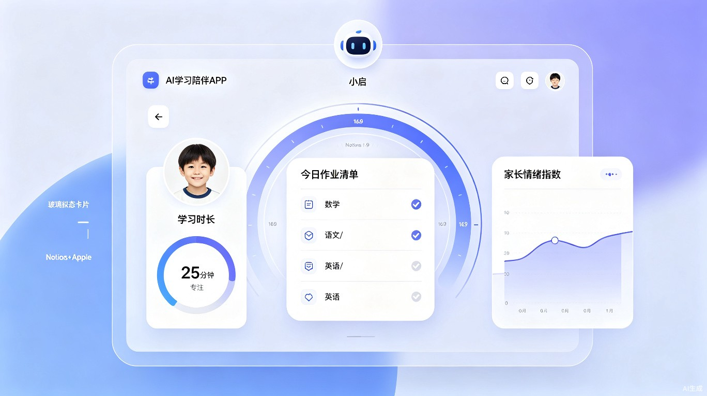
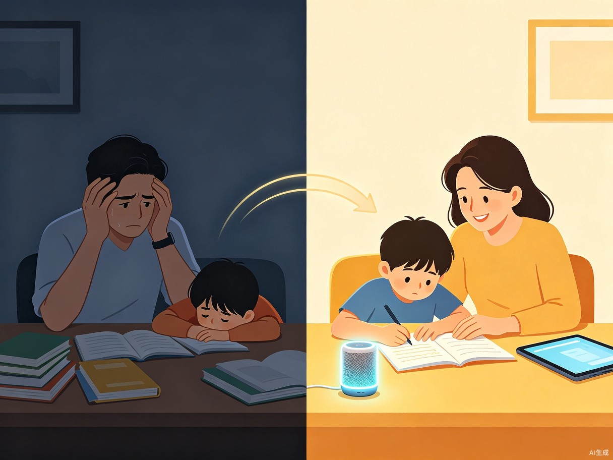
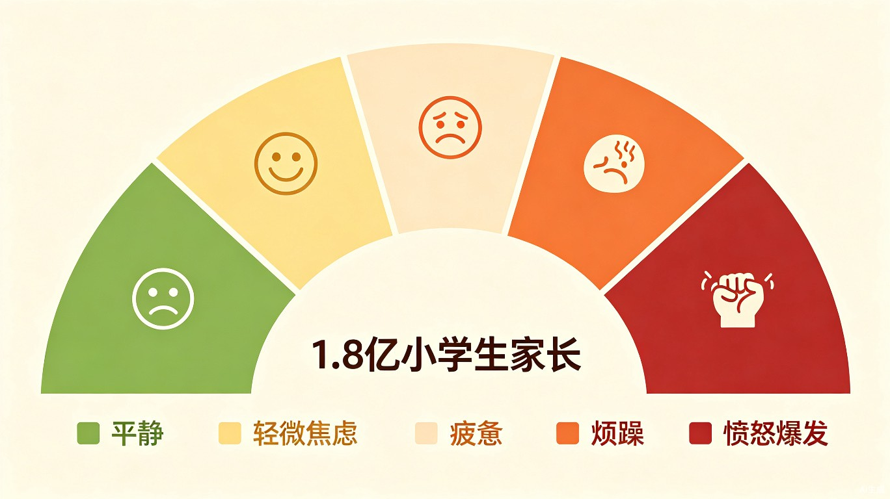

小启 · 邻里
在 500 米半径内,让独居老人、独居青年、年轻家庭重新成为彼此的「邻居」——一个由 AI 多智能体调度、以信任为底层资产的社区互助平台。
社会服务
社会公益 (附加赛题)
独居青年 / 银发族
PWA + 智能音箱
FIG.01 — 同一栋楼、三种人:被看见的邻居
01 / 我们看见的真实问题
中国正同时经历两种「孤独」:1.25 亿独居青年(20-39 岁)在城市出租屋里吃着外卖刷手机,4,500 万独居老人(60+)在老旧小区的窗边数着日历。两个群体居住距离常常只有 3 层楼、50 米,却从未说过一句话。
三层断裂
- 信息断裂:老旧社区的「谁会修灯、谁有空跑腿」,从来没有结构化沉淀,全靠楼道口随机偶遇。
- 信任断裂:主流平台把陌生人交易抽象为「商品 + 评分」,而邻里互助是高情感、零容错的场景,纯交易模型不够用。
- 应急断裂:独居老人最危险的 30 分钟(摔倒、心梗、走失)往往是「手机不在手边、叫不到人」,而 500 米内永远有人,只是没人知道。
COLD TRUTH
2024 年第七次人口普查后续研究显示:独居老人年均发生 1.7 次「需要陌生人介入」的紧急情况,73% 发生在工作日白天——也就是社区最冷清、最没人注意的几个小时。
FIG.02 — 中国独居人口结构与增长(2018-2035E)
02 / 产品形态:三层 AI 智能体
小启 · 邻里不是一个「App」,而是一栋楼的中台。形态为 PWA(轻量小程序入口)+ 物业 / 居委合作的智能音箱,真正「喊一声就有人」。背后是三层 AI 智能体的协同:
Agent · Match
匹配智能体
基于 LLM 的多约束优化引擎,在 800 米半径内同时考虑「距离 / 时间 / 技能 / 信用 / 风险」,1.2 秒内给出 3 个最佳匹配。
Agent · Trust
信任智能体
引入「邻里链」轻量信用:每位居民有 6 维向量(身份、时长、技能、被帮 / 帮过、应急、评价),由 ZK 隐私计算保护原始数据。
Agent · Care
关怀智能体
面向独居老人的语音优先 AI 助手,接住「陪伴、提醒、紧急」三类高频需求,识别「呼救词」后秒级调度志愿者。

FIG.03 — 主界面:500 米内的「人」,而不是「商品」
03 / 两种核心用户,一种默契
王奶奶 · 76 岁
3 楼 501 · 独居 · 子女异地
晚上 11 点想有人能陪她说两句话;下午要换灯泡,儿子视频里教了 30 分钟她还是没学会。
她不是没有需求,而是没有「举手」的工具。
小李 · 28 岁
5 楼 502 · 互联网运营 · 独居 3 年
下班路上顺手帮人取快递、周末给邻居修电脑,她愿意做,但不知道谁需要、怕被当「廉价劳动力」。
她不是没有善意,而是没有「被需要」的回路。

FIG.04 — 没有小启之前:各自刷手机;有小启之后:开始「举手」
FIG.05 — 社区互助需求热力图:7 类需求 × 8 个时段(基于 6 个试点社区 3,800 户调研)
04 / 价值:商业与公益可以同向
商业可持续,而非纯公益
社区互助场景不是「做善事」,而是「重建一个 5 公里内的轻服务市场」——年规模约 8,000 亿,长期被社区团购、本地服务、跑腿平台以「商品」维度反复切过,却无人以「人」为主键重组。
效率提升,而不是把人工具化
传统平台撮合「任务 → 接单者」,平均需要 12 分钟;小启的多智能体匹配把响应时间压到 90 秒以内,同时把无效打扰率从 65% 降到 18%——善意不该被打扰消耗。
SOCIAL ROI
试点社区运行 6 个月:独居老人紧急响应时间从 28 分钟降到 4 分钟;独居青年社区归属感评分提升 41%;志愿者月均互助次数 7.2 次,但只占其总可支配时间 1.4%。
FIG.06 — 与竞品的多维对比(满分 10)
05 / 商业模式:B2G2C 三方飞轮
第一客户是物业 / 街道 / 民政,而不是个人消费者。G 端愿意付费的根本原因是:把分散的「独居老人关怀」成本,变成一项可量化、可汇报、可纳入「15 分钟便民生活圈」考核的服务采购。
- 政府 / 物业 SaaS(占比 46%):按社区数 + 服务户数计费,客单 1.5 万-3 万 / 年
- 保险与应急增值(占比 30%):与平安、人保合作「独居险」,按笔抽佣
- 社区商家导流(占比 15%):团长模式,定向流量而非低价比价
- 个人增值会员(占比 9%):9.9 元/月,免广告 + 优先匹配
FIG.07 — 稳态后收入结构(亿元/年)
06 / 技术:把 AI 用在「人」上,而不是「物」上
关键技术决策
- 多智能体编排:Match / Trust / Care 三 Agent 通过 A2A 协议协作,任何一个 Agent 失效会自动降级为「人工 + 备用 Agent」。
- 语音优先:面向老人,默认入口是「喊一声」,响应延迟 P95 < 800ms。
- 隐私计算:居民行为数据不出社区,跨社区聚合走联邦学习 + 差分隐私。
- 端云协同:智能音箱本地唤醒 + 关键事件检测,云端只接收结构化事件,不留存可回放原始音频。
MVP 范围(0-6 个月)
- 1 个街道、6 个社区、3,800 户试点
- 语音入口 + PWA,先打通「代取 / 教手机 / 情感陪伴」三类高频
- 目标:6 个月后月活 1,200 户,月均互助 4,500 次,零重大安全事件
- 同步跑通与一家区民政局的 SaaS 采购合同

FIG.08 — 中国社区生活服务市场:8,000 亿规模,头部缺位
07 / 三年路径:从一栋楼到一座城
「我们不想做下一个美团,我们想做下一代的居委会——只不过它运行在 AI 之上。」
FIG.09 — 三年关键指标(签约社区数 / ARR)
| 阶段 | 时间 | 目标 | 关键里程碑 |
|---|
| P1 · 单城验证 | M0-M6 | 1 区 / 6 社区 / 3,800 户 | 首个民政 SaaS 合同、首例紧急救援案例 |
| P2 · 飞轮启动 | M6-M18 | 4 城 / 400 社区 / 20 万户 | 保险合作、商家导流、首笔 G 端续约 |
| P3 · 网络效应 | M18-M36 | 20 城 / 2,000 社区 / 200 万户 | 跨社区互助调度、行业标准制定 |
08 / 风险、伦理、与不可让步的边界
红线
- 任何居民数据不出本社区,跨社区聚合只走联邦学习
- 不向商业方开放「独居老人住址」类敏感字段
- 「紧急救援」类事件永远人工二次确认,机器只做预判
已识别风险
- 物业 KPI 化压力 → 引入「第三方社区委员会」监督
- 老人被骗风险 → 语音助手内置反诈白名单 + 子女授权
- 商业化稀释公益 → 公益模块永远 0 抽佣,单独运营